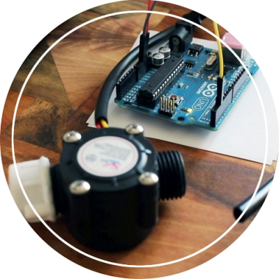

Qualified for eYRC 2015 organized by IIT Bombay (ranked top 300 from 4893 teams). Worked on an automated waste collection, management and disposal robot for urban and rural applications according to given theme (Recyclable Waste Management), and ranked amongst the top 10 teams upon completion of the project.
Designed a Smart Water Flow Regulator
As a part of course work, designed and implemented a smart water flow regulator using Arduino Prototyping Board and suitable sensors, to regulate the flow of water in a system based on the rate of flow recorded by the sensor.

Arduino based bluetooth controlled Robot
Designed and implemented a bluetooth controlled robot, using Arduino Prototyping Board, to be manuvered using a mobile device, and designed an app for the same.